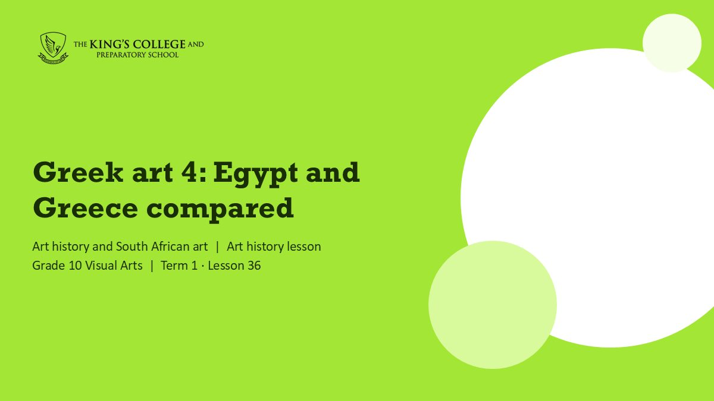

Term 1 · Lesson 35 · Art history lesson
Greek art 4: Egypt and Greece compared
Start here
Today I will
- Compare how Egypt and Greece showed the human body
- Use the Focus Theme 'the ideal versus the real'
- Write a comparative paragraph organised by aspect
A filtered photo and an unedited photo of the same face: which one is 'true', and which one is 'ideal'?
Words to Know
| Word | Meaning |
|---|---|
| Ideal | Shown as perfect: the way something should look according to a set of rules or beliefs. |
| Real | Shown as it actually looks, including age, emotion and imperfection. |
| Comparison | Showing both the similarities and the differences between two artworks. |
| Proportion | The size of each part of a figure in relation to the other parts and to the whole. |
| Canon | A set of rules for ideal proportions, used in both Egypt and Greece. |
Slides

Notes
The ideal versus the real; how each culture showed the human body; revision for the class test.
Egypt and Greece side by side
| Egypt (e.g. Menkaure and Queen) | Greece (e.g. Doryphoros) |
|---|---|
| Purpose: a home for the ka, made to last for eternity | Purpose: to honour gods and athletes and show the perfect human form |
| Pose: frontal, rigid, symmetrical, left foot forward | Pose: contrapposto, weight on one leg, body relaxed |
| Material: hard stone with a back slab and stone between the limbs | Material: marble or bronze, freed from the block, with no back slab |
| Proportion: a fixed grid-based canon | Proportion: Polykleitos's mathematical Canon of ideal ratios |
| Ideal: calm, ageless rulers showing an unchanging order | Ideal: perfect balance; the Hellenistic period later turned towards the real |
Writing a comparison by aspect
- Pick an aspect: Choose one aspect, such as pose, material or proportion.
- Say what is similar: Use words such as both, similarly, likewise.
- Say what is different: Use words such as whereas, however, in contrast, while.
- Explain the effect: Say why the difference matters: what each choice tells us about the culture's beliefs.
Egypt idealised for eternity; Greece idealised for perfection, then turned towards the real.

When Samuel looked for a new king, God reminded him that people look at the outward appearance but the Lord looks at the heart. How does that change the way we think about 'ideal' bodies?
Practical
You need: History booklet, visual journal
Comparative paragraph: an Egyptian and a Greek statue
- Choose King Menkaure and Queen and either the Kroisos or the Doryphoros.
- Use the FET formula on form for each statue: identify, describe, effect.
- Write one comparative paragraph of about 120 words, organised by aspect, not one statue after the other.
- Use at least two linking words for similarity and two for difference.
- End by linking to the Focus Theme 'the ideal versus the real'.
- Tick off the class test revision checklist: Greek periods, orders, pottery, key works and terms.
Test yourself
- Give one similarity between King Menkaure and Queen and the Kroisos.
- Give two differences between an Egyptian statue and the Doryphoros.
- Explain what 'the ideal versus the real' means as a Focus Theme.
Show answers
1. Both stand stiffly and frontally with the left foot forward and arms by the sides. 2. Any two: contrapposto versus a rigid frontal pose; freed from the block versus a back slab; Greek mathematical canon versus the Egyptian grid; honouring the perfect human form versus a home for the ka. 3. It asks whether an artwork shows people and things as perfect according to rules or beliefs (ideal) or as they really look, with flaws, age and emotion (real).
Finished early?
Write a single sharp comparison sentence by aspect.
- Sketch quick stick figures of King Menkaure and the Doryphoros side by side, with lines across the hips.
- Choose one aspect: pose, material or proportion.
- Write one sentence that uses 'both' for a similarity and 'whereas' for a difference.
- Add a second sentence explaining what the difference tells us about each culture's beliefs.